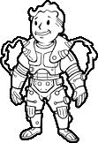
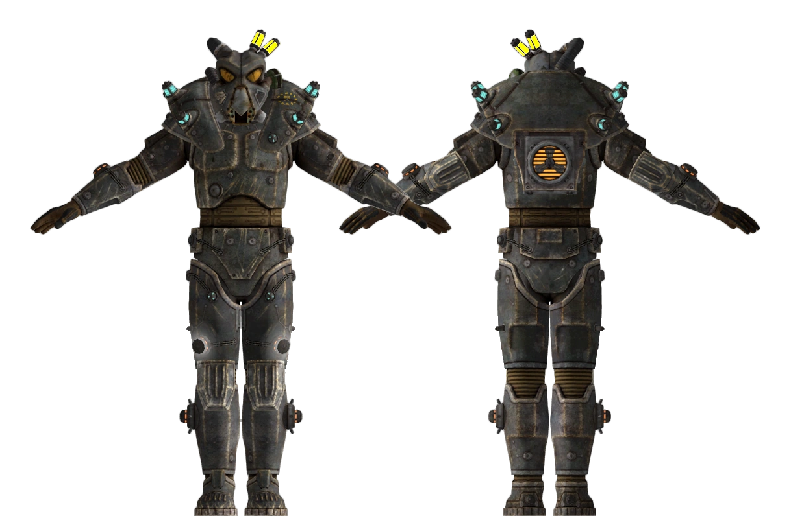
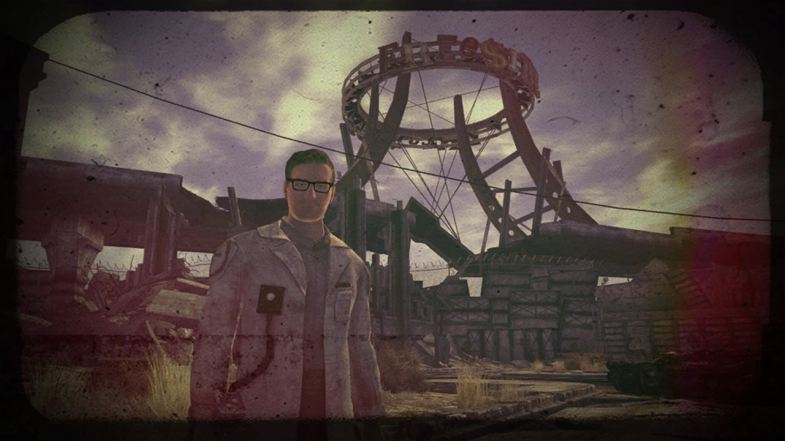
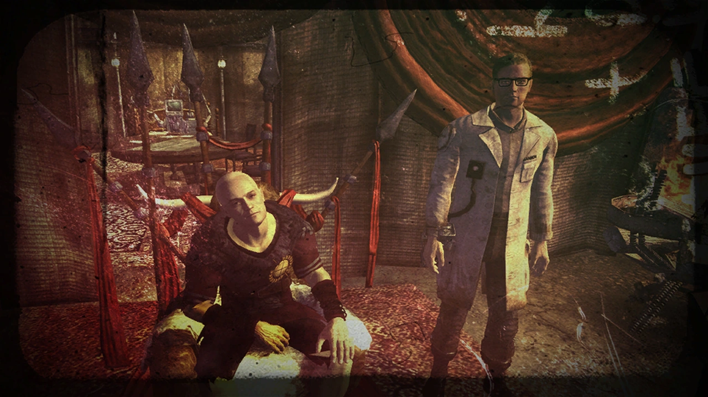
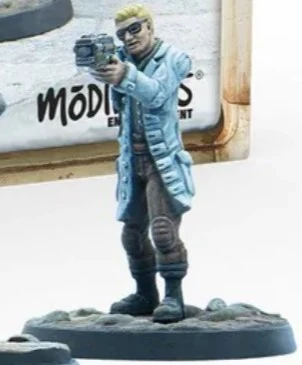
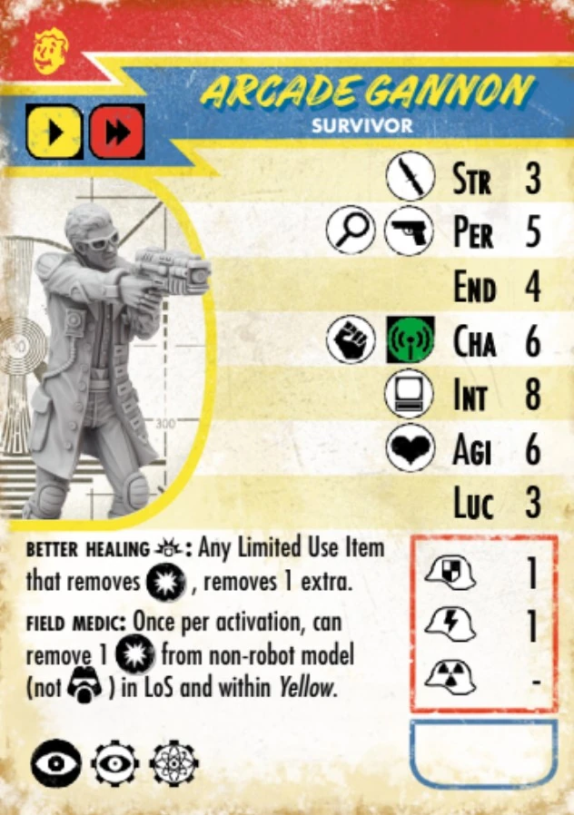
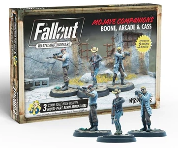
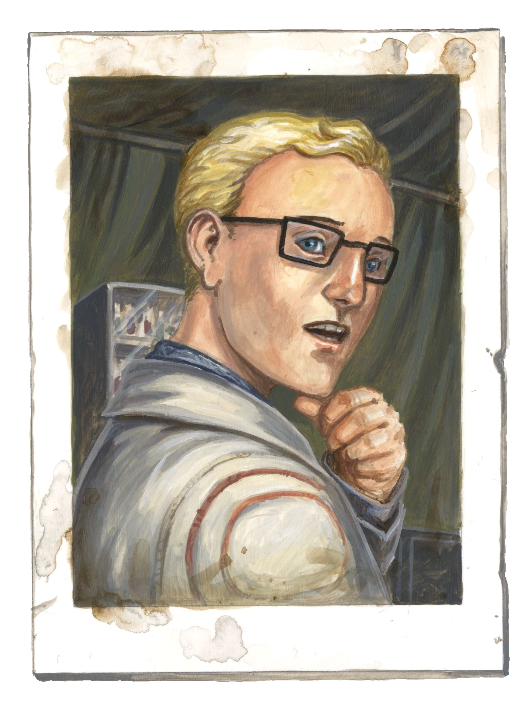
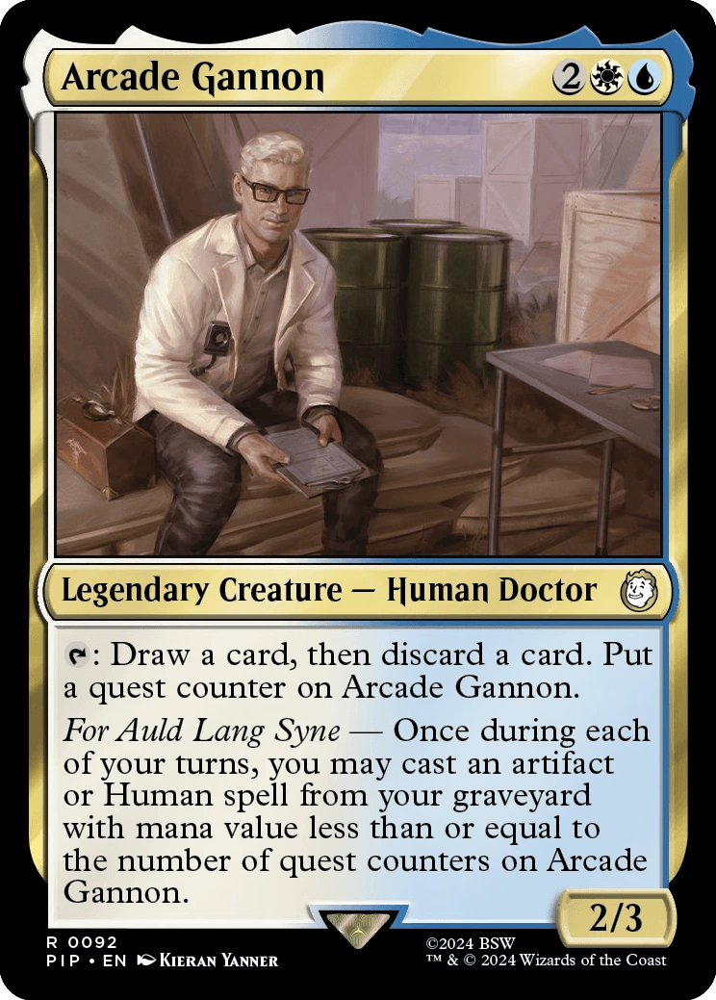
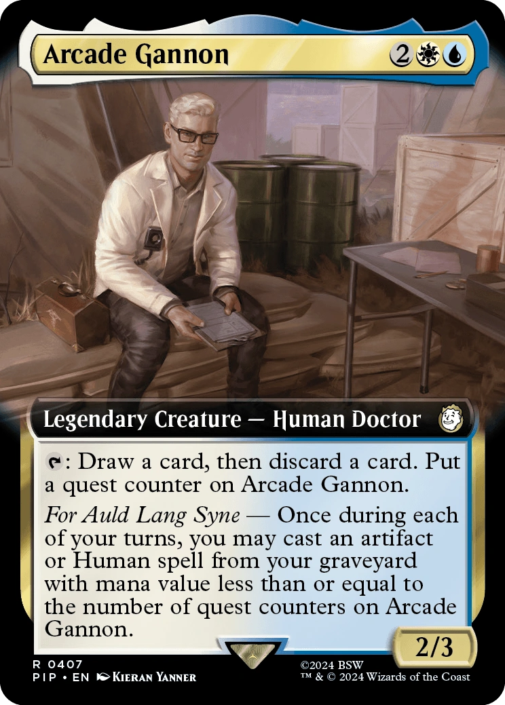

Arcade Gannon
アーケード・ゲノン
アーケード・イスラエル・ゲノン（Arcade Israel Gannon）は、『Fallout: New Vegas』に登場するアポカリプスの使徒の医師であり科学者です。彼はモハビ・ウェイストランドのオールド・モーモン・フォートに居住しており、運び屋の同行者（コンパニオン）となる可能性があります。
経歴
エンクレイヴでの生活
エンクレイヴの士官であったゲノン・シニアの一人息子として、アーケードは2245年から2246年頃、選ばれし者がオイルリグを破壊した数年後のナヴァロ軍事基地で生まれました。幼い頃に父親を亡くし、母親と強い絆を築きましたが、本人の言葉によれば、その死を乗り越えることはありませんでした。父親が戦前・戦後の世界で人道に対する罪を犯したファシスト的な準軍事組織のメンバーであったという事実は、彼の心に大きな影を落としています。さらに、父親の死は任務中に発生し、その正確な状況は残されたメンバーたちからも彼に明かされることはありませんでした。
その後、ナヴァロ基地が新カリフォルニア共和国（NCR）の攻撃を受けて壊滅する直前、アーケードと母親、そして父親の部下であった数人の兵士たちは基地を脱出しました。彼らはナヴァロを逃れた後もブラザーフッド・オブ・スティール（BoS）による追跡の危険にさらされ続け、NCRの領土内へ南下して身元を隠しながら統合を試みました。やがてアーケードはアポカリプスの使徒と接触して加入し、人々を助けたいという願いと学問への才能を組み合わせる道を見出しました。
使徒での活動を通じて、彼は医学に天職を見出しました。NCR中心部にある優れた医療施設で医学のすべてを学び、有能な医師としての地位を確立しました。また、歴史、特に戦前の失敗した社会経済政策に関心を持ち、使徒の広範な図書室や古いホロテープを利用して独学でラテン語を習得しました。専門の植物学者ではありませんが、植物の医学的特性についての研究にも時間を割いています。
モハビへの移動
NCRの指導部が、敗北したエンクレイヴの残党が身元を隠して領土内に住んでいることを察知すると、彼らを戦犯として追跡し、終身刑に処す政策を採用しました。NCRレンジャーやBoS、賞金稼ぎたちがエンクレイヴ関係者を血眼になって探す中、残党たちは追っ手の手を逃れるためにNCRの辺境へと移動を余儀なくされました。アーケードは彼らの安全を見守るため、自ら辺境での任務を志願し、モハビ・ウェイストランドへとやってきました。
フリーサイドのオールド・モーモン・フォートに拠点を置くジュリー・ファーカスの支部に入った彼は、彼女の依頼で植物研究に専念することになりました。地元の植物（バレルサボテンなど）から医療品（スティムパックなど）を製造する方法や、一般的な病気や怪我の代替治療法を模索しています。彼はこの研究を「高潔な目的を持った、実りのない時間の浪費」と自嘲気味に語っていますが、戦前の物資が底をつく未来に備え、忘れ去られた植物の活用法を再発見することに一縷の望みを託しています。彼は研究を退屈だと感じていますが、ジュリーによって「人目につかない場所」に置かれていることに感謝しています。
性格
アーケードは自らを「退屈な人間」で非社交的だと主張していますが、実際には博識で機知に富み、皮肉を交えた知的な会話を好みます。社会学や歴史に関する深い知識を持ち、哲学的な問題を議論することに長けています。シーザーのような知的な対話相手は彼の機知を高く評価しますが、逆にラニウスのような人物は彼の毒舌にすぐに嫌気がさしてしまいます。
彼は強い信念の持ち主でもあります。個人の自由、独立、そして自己決定権を強く信じており、もし隷属を強いられるようなことがあれば、自らの命を絶ってでも屈することを拒むほどの覚悟を持っています。
政治的には、モハビが外部の力（NCRや軍団）や独裁者（Mr.ハウス）から独立することを強く支持しています。彼は、モハビの住民が自らの道を切り開くべきだと信じており、そのための秩序維持には自らのエンクレイヴの知識や技術を提供することを惜しみません。彼はNCRの併合を帝国主義的だと批判していますが、シーザーの軍団という恐怖に対する防波堤としては認めており、軍団の勝利を阻止するためなら引退も辞さないと考えています。
人間関係
自らの過去に対する葛藤から、アーケードは個人的な質問をはぐらかす傾向があります。彼は自らの同性愛についても隠していませんが、これまでの恋人たちは信頼できる相談相手にはならなかったと語っています。
彼が維持している数少ない長期的な関係は、家族のように思っているエンクレイヴの残党たちです。
母親の死後、彼にとって「唯一の女性」となったのはデイジー・ホイットマンでした。彼女は彼の父親とも親しく、子供がいなかった彼女は常にアーケードの話を聞いてくれました。指揮官であったジュダ・クレガーは、アーケードの父親への忠誠心から彼を温かく迎え入れ、個性の強いメンバーたちをまとめ上げるリーダーとしてアーケードの尊敬を集めています。
また、重装兵のオリオン・モレノやカンニバル・ジョンソンも彼に影響を与えました。特にジョンソンは、エンクレイヴに反発しながらも任務を遂行していた人物であり、アーケードの父親についても「お前は父親に似ている」と語り、アーケードの自らのルーツに対する葛藤を育むことになりました。
プレイヤーキャラクターとの関わり
仲間にする方法
アーケードを同行者にするには、以下のいずれかの条件を満たす必要があります：
- アポカリプスの使徒との評判が「好意的（Liked）」以上であること。
- ジュリー・ファーカスのために「High Times」を完了し、余剰物資を寄付すること。
- Speechスキルが75以上であること。
- Perk「Confirmed Bachelor」を所持していること。
- Intelligenceが3以下であること（同情から同行してくれます）。
Craig Booneと同様、シーザーの軍団と良好な関係にある場合は同行を拒否されます。これを回避するには、NCRの衣装を着用して話しかける必要があります。
クエストとイベント
- For Auld Lang Syne: モハビの勢力均衡が変化した後、アーケードは運び屋にエンクレイヴの残党を招集し、フーバーダムの戦いに協力するよう依頼します。
- Beyond the Beef: アーケードをモルティマーに食料（生贄）として差し出すことが可能です。
- Bitter Springs Infirmary Blues: 専門的な医学トレーニングをマークランドに教えることができ、教科書の調達をスキップできます。
- Et Tumor, Brute?: シーザーの主治医として、アーケードを奴隷として売り飛ばすことができます。これはカルマの大幅な低下を招きます。
- That Lucky Old Sun: ヘリオス1で電力をどこに送るかについて意見を述べます。ARCHIMEDES Iを起動してNCR兵を焼き殺すと、彼は永久に去ります。
「不快（Dislike）」ポイント
アーケードには内部的な不快ポイントカウンターがあり、特定のアクションで上昇します。3ポイントで警告、6ポイントで永久に離脱します。
- 「The White Wash」でアンダーソンを擁護しなかったり、co-opから金をゆすり取ったりすると上昇。
- シーザーの軍団を肯定するような発言をすると大幅に上昇。
- 罪のない人々を殺害すると上昇。
開発の裏話
アーケードはプロジェクトディレクターのジョシュ・ソーヤーによって執筆されました。ソーヤーは他の多くの同行者の基本詳細を概説しましたが、アーケードは彼が直接全ての対話を執筆した唯一の同行者でした。彼は元々、ブラック・アイル・スタジオによるキャンセルされたFallout 3（コードネーム：Van Buren）に登場する予定でした。
アーケードは、ジョシュ・ソーヤーがクリス・アヴェロン主宰のFalloutテーブルトークキャンペーンで使用していたプレイヤーキャラクターの一人でした。ソーヤーはこのテーブルトークゲームの間に作成されたアーケードのキャラクターデザインのノートを保持しており、2020年のライブ配信でその一部を公開しました。初期設定では彼は34歳、ミドルネームは「ダニエル」で、父親の名前はマークとされていました。
アーケードの声を担当したのは、TVシリーズ『CHUCK/チャック』や映画『シャザム!』で知られる俳優のザカリー・リーヴァイです。ジョシュ・ソーヤーは、リーヴァイが各対話のトーンを即座に直感する能力に非常に感銘を受け、収録は非常にスムーズに進んだとコメントしています。

所持品
- アーケードの白衣
- 眼鏡
- ゲノン・ファミリー・テスラアーマー / ヘルメット（クエスト完了後）
- アーケード・ゲノンのプラズマ・ディフェンダー
- アーケード・ゲノンのリッパー
- スティムパック
備考
- アーケードはFalloutシリーズで公式に同性愛者であると明言されている数少ないキャラクターの一人です（もう一人はベロニカ）。
- 彼はIntelligenceが10という、同行者の中で最も知能が高い設定になっています。
- 彼は多くのNPCや運び屋よりも背が高く設定されています。
- ラテン語を好み、「Nihil novi sub sole（太陽の下に新しきものなし）」という言葉を頻繁に引用します。
ギャラリー















感想
彼がラテン語で引用する言葉や、シーザーとの舌戦、それから理想主義者ゆえの苦悩。どれをとっても非常に人間臭く、魅力に溢れている。ザカリー・リーヴァイの演技も相まって、彼の皮肉屋だが心優しい性格が見事に表現されている。
「太陽の下に新しきものなし」。彼が好んで使うこの言葉は、歴史が繰り返されることへの諦念ではなく、歴史を知る者としての責任感の裏返しなのかもしれない。
This article was created by translating and editing Arcade Gannon from Nukapedia: The Fallout Wiki.
Licensed under the Creative Commons Attribution-Share Alike License (CC BY-SA 3.0).
コミュニティ維持のため、寄付を受け付けております。
> COMMENTS